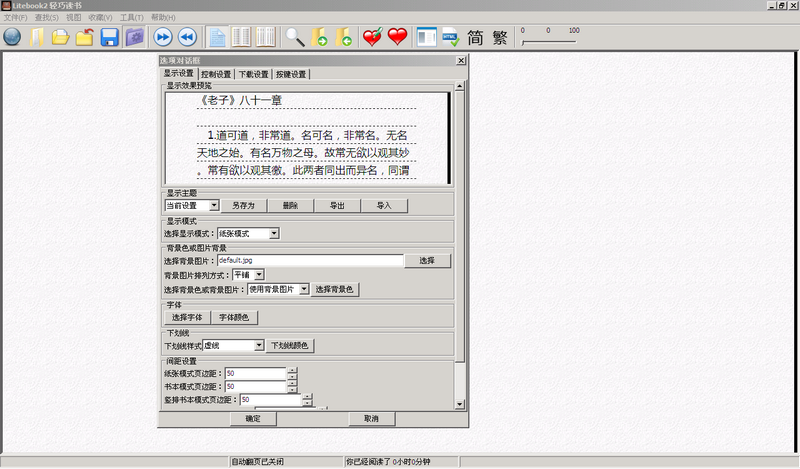

Litebook支持定制化的显示主题，通过“文件”－》“选项”菜单或是工具栏图标打开对话框：

- Litebook2预置了几种显示主题，可以通过预览窗口下面的下拉菜单进行快速选择。
- 显示主题的定制是非常灵活的，从背景图片/背景颜色/显示方式/下划线/字体/行间距等等均可定制，定制的效果可以在预览窗口所见及所得。
- 定制的主题可以通过“另存为”按钮存为新的主题；已有的主题也可以通过“删除按钮”进行删除
- 另外显示主题还可以导出（和导入）后缀为".lbt"的文件；
Created with the Personal Edition of HelpNDoc: iPhone web sites made easy